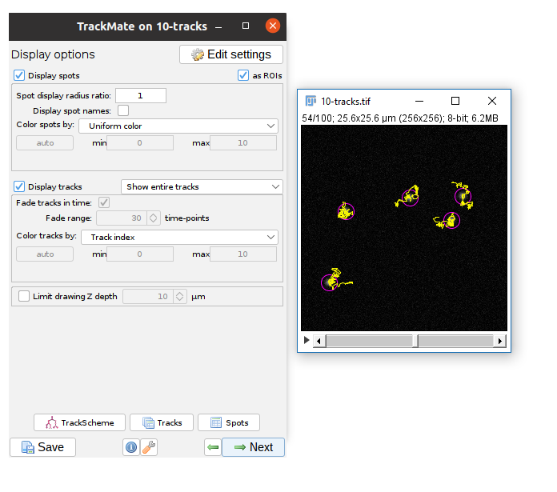
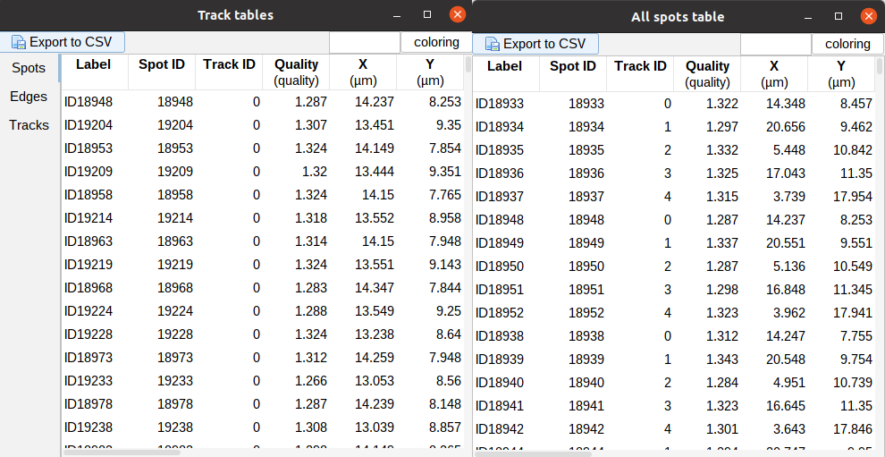
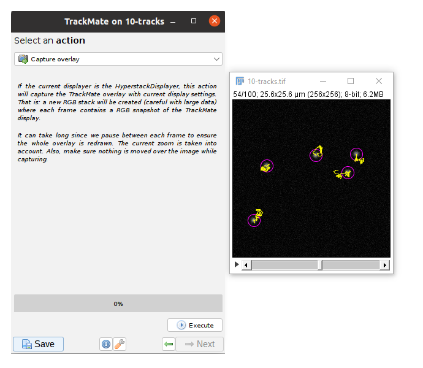
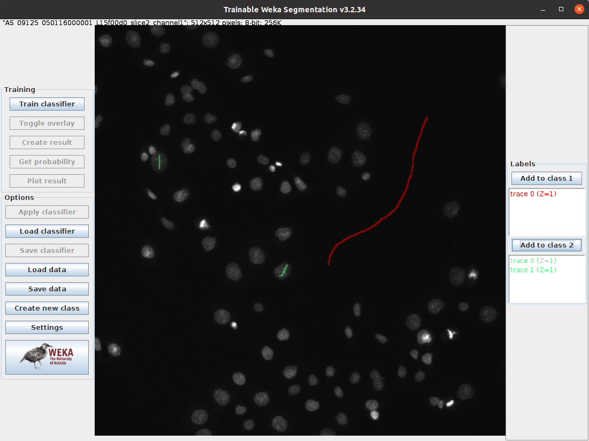

Tracking and Machine Learning for Pixel Classification
Laura Cooper
Research Fellow, CAMDU
Navigation:
- Left/right arrow keys for previous/next slide
- 'm' key to get to navigation menu
- Escape for slide overview
Applications: Tracking
Correlating spatial and temporal phenomena, Feature detection, linkage, gotchas
Life exists in the fourth dimension. Tracking allows you to correlate spatial and temporal properties.


Most partcles look the same! Without any way to identify them, tracking is probabilistic.
Tracking has two parts: Feature Identification and Feature Linking


For every frame, features are detected, typically using a Gaussian-based method (eg. Laplacian of Gaussian: LoG)
Spots can be localised to sub-pixel resolution!

Without sub-pixel localisation, the precision of detection is limited to whole pixel values.
Feature linkage

For each feature, all possible links in the next frame are calculated. This includes the spot disappearing completely.

A 'cost matrix' is formed to compare the 'cost' of each linkage. This is globally optimised to calculate the lowest cost for all linkages.
In the simplest form, a cost matrix will usually consider distance. Many other parameters can be used such as:
- Intensity
- Shape
- Quality of fit
- Speed
- Motion type
Which can allow for a more accurate linkage especially in crowded or low S/N environments
Open 10-tracks.tif
Hit the arrow to play the movie. Right Click on the arrow to set playback speed

If you're interested in how the dataset was made see this snippet
Run [Plugins > Tracking > Trackmate]
- Trackmate guides you through tracking using the Next and Prev buttons
- The first dialog lets you select a subset (in space and time) to process. This is handy on large datasets when you want to calculate parameters before processing the whole dataset
- Hit Next, keep the default (LoG) detector then hit Next again to move onto Feature detection.
- Enter a Blob Diameter of 2 (note the scaled units)
- Hit preview. Without any threshold, all the background noise is detected as features
- Add a threshold of 0.1 and hit Preview again.
Generally your aim should be to provide the minimum threshold that removes all noise. Slide the navigation bar, then hit Preview to check out a few other timepoints.
Hit next, accepting defaults until you reach 'Set Filters on Spots'
- Hit next, accepting defaults until you reach 'Settings for Simple LAP tracker'
- Set the distances to 5 and hit Next
- You have tracks!
Linking Max Distance Sets a 'search radius' for linkage

Gap-closing Max Frame Gap Allows linkages to be found in non-adjacent frames

Gap-closing Max Distance Limits search radius in non-adjacent frames
Common outputs from Trackmate: (1) Tracking data
 Click 'Tracks' or 'Spots' to view the analysis.
Common outputs from Trackmate: (2) Movies!

You may have to adjust the display options to get the tracks drawing the way you want (try "Local Backwards")
While simple, Tracking is not to be taken on lightly!
- For the best results make sure the inter-particle distance is greater than the frame-to-frame movement. If not, try to increase resolution (more pixels) or decrease interval (more frames)
- The search radius increases processing time with HUGE datasets but in most case, has little effect on processing time. Remember that closer particles will still be linked preferably if possible.
- Keep it simple! Unless you have problems with noise, blinking, focal shifts and similar, do not introduce gap closing as this may lead to false-linkages
- 'Simple LAP tracker' does not include merge/spliting events, however Trackmate ships with the more complex 'LAP Tracker' which can handle merge/splitting events (but keep in mind your system!)
- Quality control! Look at your output carefully and make sure you're not getting 'jumps' where one particle is linked to another incorrectly
Machine Learning
- Algorithms designed to find patterns in data
- Training (supervised learning) takes a set of input data and it's known outputs and trains a model to predict the output for new data
- Classfication models separate input data into categories
- Trainable Weka Segmentation Fiji Plugin
- Combines a collection of machine learning algorithms with selected image features to produce segmentations
- Other software options include:
- Download this folder and unzip. This is a subset of BBBC008 from the Broad Bioimage Benchmark Collection (same dataset as used in Workshop 2)
- In Fiji,
[Plugins > Segmentation > Trainable Weka Segmentation], select one of the images to open.

- Click and drag to draw on the image
- Draw a line in the background (dark area) and click
Add to class 1(on the right) - Draw a line in one or two of the nuclei (light area) and click
Add to class 2 - Click
Train classifier(on the left)

- Add more labels and retrain the classifier, to improve the result
- [Optional] Click
Settingsand select/deselect different "Training features". Retrain the classifier to see how the different features change the result. For more information about each feature, visit the Plugin webpage - When you are happy with the result, click
Apply classifierand select a different image from the data set. Does the classifier work well for this image too? - Click
Save dataand save the data.arff file
- Close the Trainable Weka Segmentation Window and any other open image windows
[Plugins > Segmentation > Trainable Weka Segmentation]and select another image to open.- Click
and open the data.arff file - Click
Train classifier. This will apply the classifier from the previous image - Add more labels and click
Train classifieragain. This allows you to train on multiple images
- Machine learning can also be used for:
- Denoising
- Isotropic Reconstruction
- Surface Projection
- See CSBDeep for examples
- Training a model can be very time consuming, it can require a lot of user input and computing time. Using a Graphical Processing Unit (GPU) rather than the Central Processing Unit (CPU) can speed up the processing time.